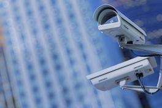
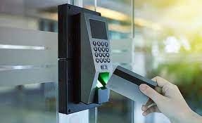

Instalacion de Camaras
Obtené control total de lo que pasa dentro y fuera de casa. Desde un celular podrás acceder a las cámaras en todo momento, y recibir un aviso cuando estén tocando el timbre. También podrás ver quien está afuera, y atenderle estando incluso fuera del domicilio sin que el visitante lo sepa. /p> 
Instacion de Alarmas
Sistema de alarma de última tecnología completamente inalámbrico y operable desde el celular. Se conecta directamente con nuestro centro de monitoreo y en caso de verificar intrusión, nuestros operadores llamaran a la policia de forma inmediata.

Control de acceso biometrico
El sistema de control de asistencia y tiempo para personal permite controlar de forma sencilla y efectiva los tiempos de llegada y salida de los empleados de la Empresa, entre ellos tenemos: horas normales, horas extras, entradas tarde, vacaciones, horarios rotativos, horas nocturnas, festivos, y otras funciones más
Monitoreo remoto
La videovigilancia se complementa con el monitoreo remoto, el cual es una herramienta de gestión muy útil para el usuario. Ayuda a los dueños de negocios a conocer las actividades que se están desarrollando dentro la empresa, las de sus colaboradores o para saber si hay alguna amenaza afuera de sus instalaciones.